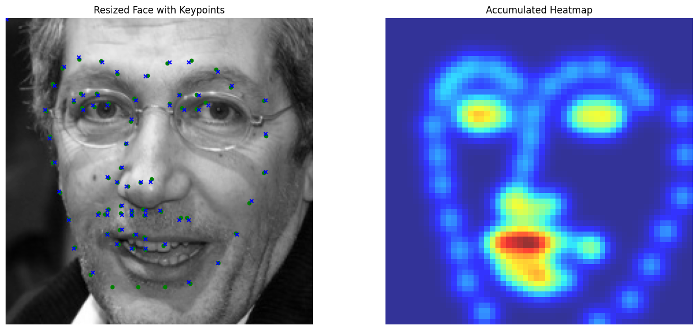
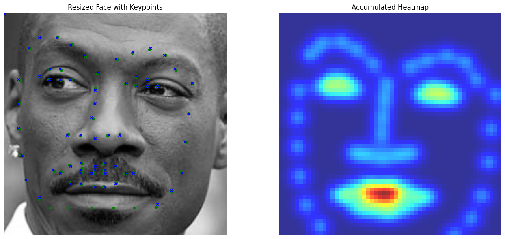
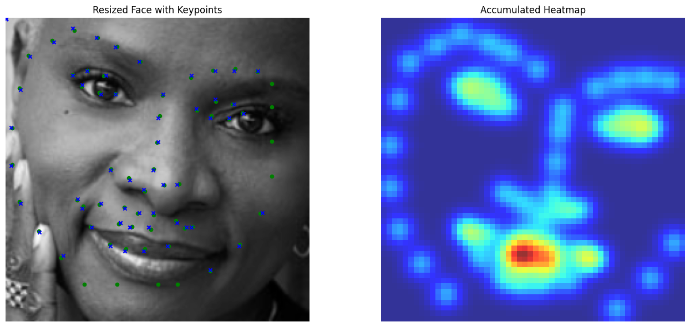
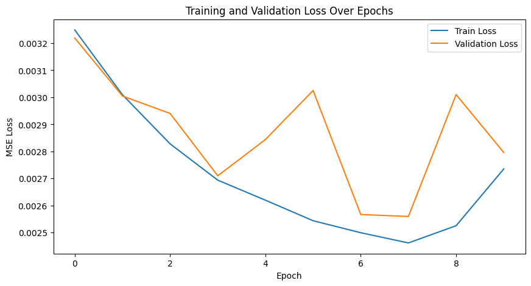
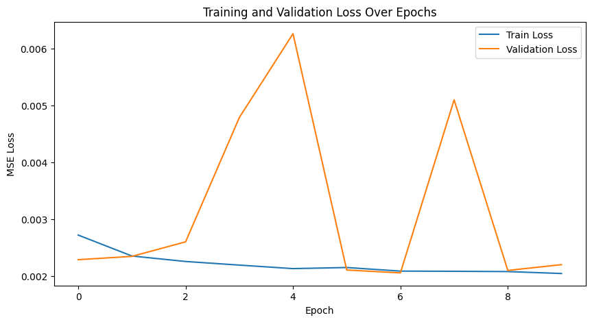
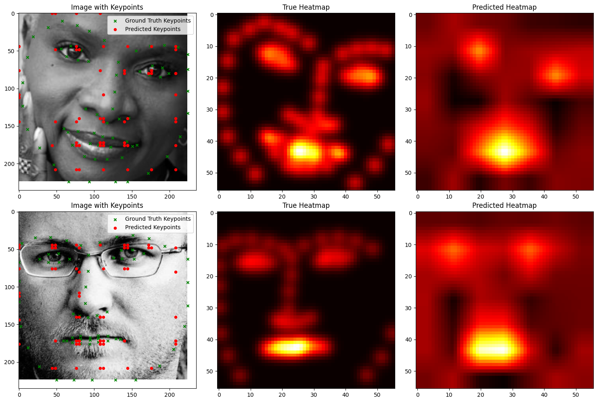

Overview
Newer keypoint detection networks, such as those proposed by Toshev et al. (2014) and Jain et al. (2014), reframe the regression task of predicting keypoint coordinates as a pixelwise classification problem. These models predict the likelihood of each pixel being a keypoint, enabling finer alignment of predictions with image features.
To supervise the model, the ground truth keypoint coordinates are converted into heatmaps by placing 2D Gaussians at the true coordinate locations. During inference, the heatmaps are transformed back into coordinates using methods like a weighted average over the heatmap or other localization techniques. This setup offers an effective way to train keypoint detection models while maintaining high spatial accuracy.
Data Preparation
We utilize the same dataset and data augmentation techniques as before. However, a key challenge in this approach is managing the conversion between keypoints and heatmaps. Currently, I lack a robust and precise algorithm for converting heatmaps back into keypoints. This limitation introduces some inaccuracies even in the simplest scenario: converting keypoints to heatmaps and then back to keypoints. These inaccuracies can propagate through the model training process, ultimately affecting prediction quality. To address this issue, incorporating a more sophisticated method, such as non-maximum suppression, could help accurately identify keypoints from heatmaps. Such techniques would ensure that the model is better equipped to handle the keypoint localization task, leading to more reliable and consistent predictions. However, this is not the point neither the scope of this project.



Model Architecture
The model uses ResNet18. The first layer is modified to accept
grayscale images as input, and the final layer outputs 68 (56,56) heatmaps.
Training is conducted using the following setup:
- Loss Function: We compared Mean Squared Error (MSE) loss and log loss. Log loss proved superior, which as always makes sense for pixelwise classification tasks.
- Learning Rate: Set to
5e-3for faster convergence. - Batch Size:
64to handle the larger dataset efficiently. - Weight Decay: Used to improve convergence speed and regularization. Set
1e-5 - Training Epochs: 10 epochs (split into two phases for a total of 20 epochs).
Challenges such as vanishing gradients when using Gaussian-based heatmaps were mitigated with batch normalization and weight initialization. Without these techniques, the model frequently predicted zero values due to gradient disappearance.
Training/Validation Loss Plot
The model was trained in two phases for a total of 20 epochs. The training and validation loss plots are shown below. While the validation curve stabilizes quickly, there is room for improvement in the model architecture to achieve better results. It seems as though with logistic loss, there is slightly better scope for improving validation across epochs. First two are MSE plots, then logistic.



Results
The model validation loss stabilizes quickly during training, indicating that the model learns effectively with the given architecture and training setup. However, this also suggests room for architectural improvements to push the model's performance further.
A recurring issue encountered is the vanishing
gradient problem, which impacts the training process and leads to organized
but incorrect keypoint predictions. This problem arises because gradients
diminish as they propagate backward through the network, especially when
using Gaussian-based heatmaps. As a result, the model struggles to adjust
weights effectively in deeper layers, thereby affecting the final predictions.
Using batch_norm proved effective against this, along with initializing weights
and enforcing dropout.
MSE Loss
We visualize ground and predicted keypoints and heatmaps, along with the original image for validation subjects not trained on. Note this covers multiple deliverables.
Logistic Loss

Good Performance (Using MSE Loss)


Bad Performance (Using MSE Loss)